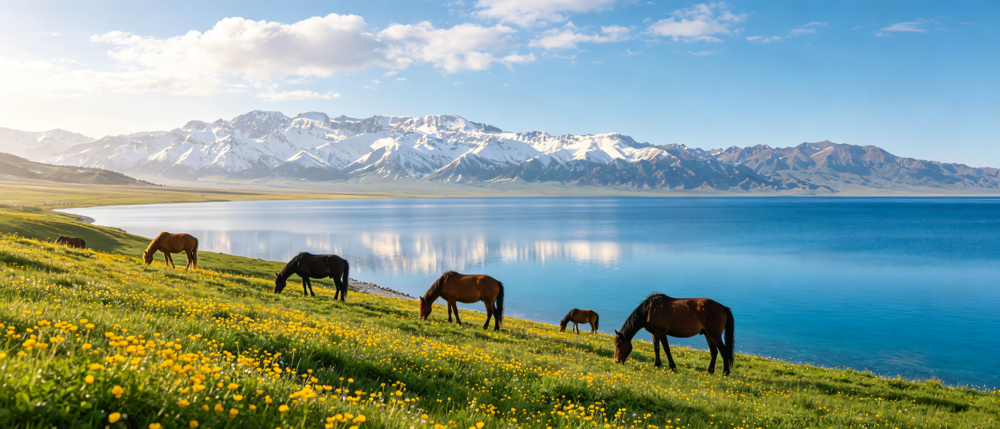
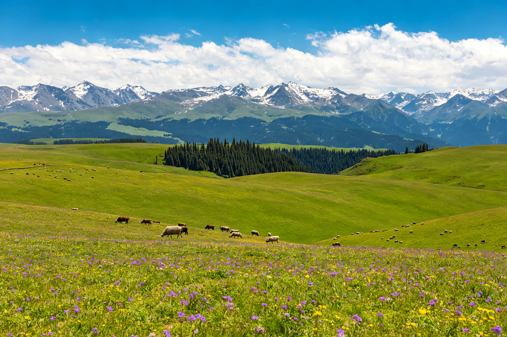
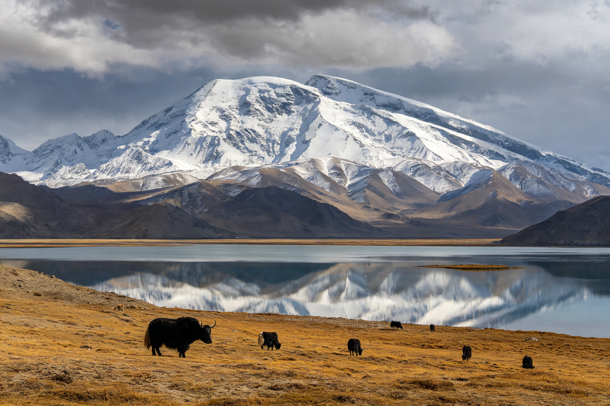
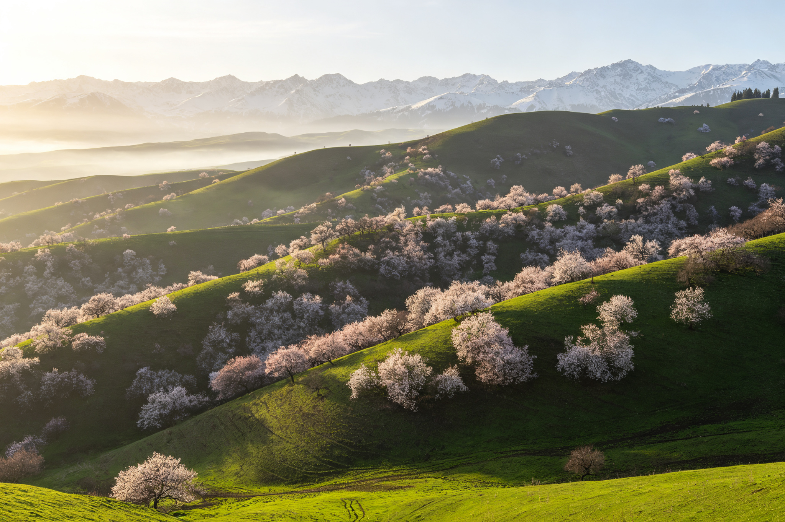
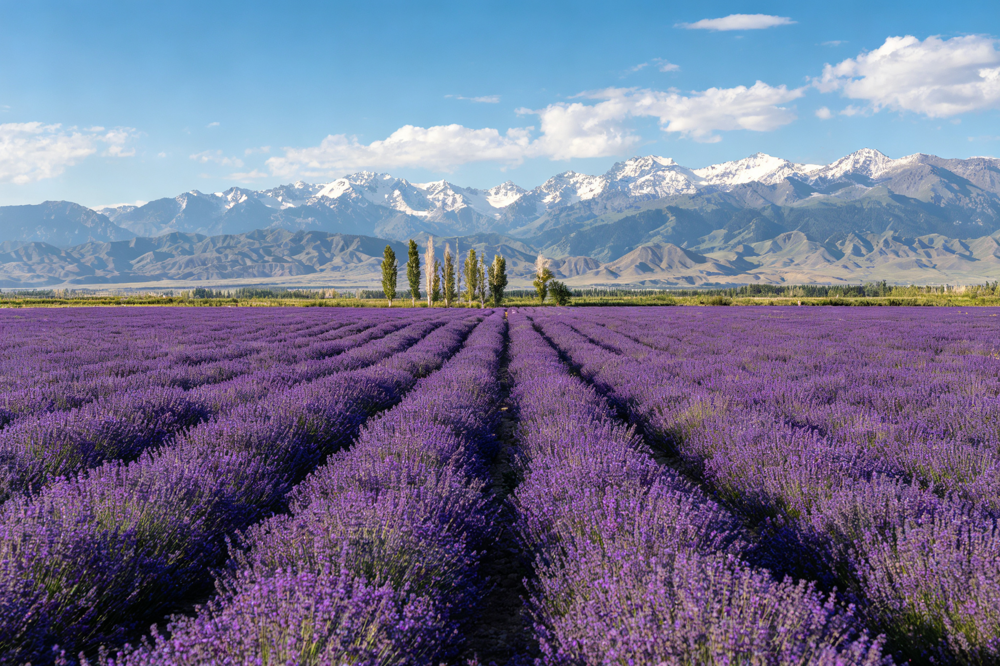
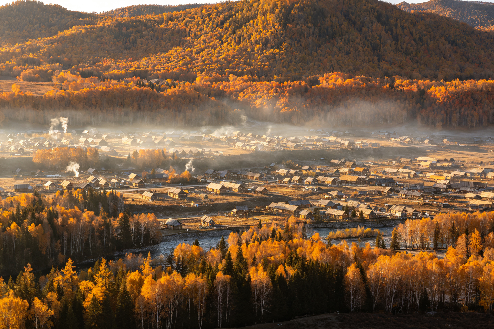
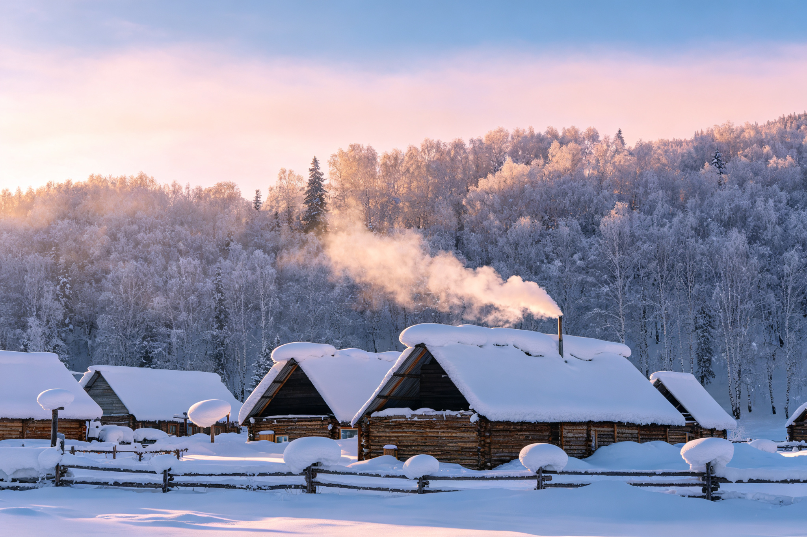
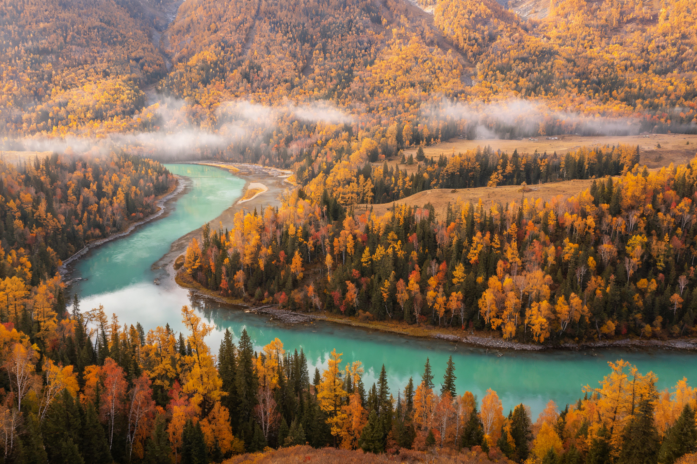
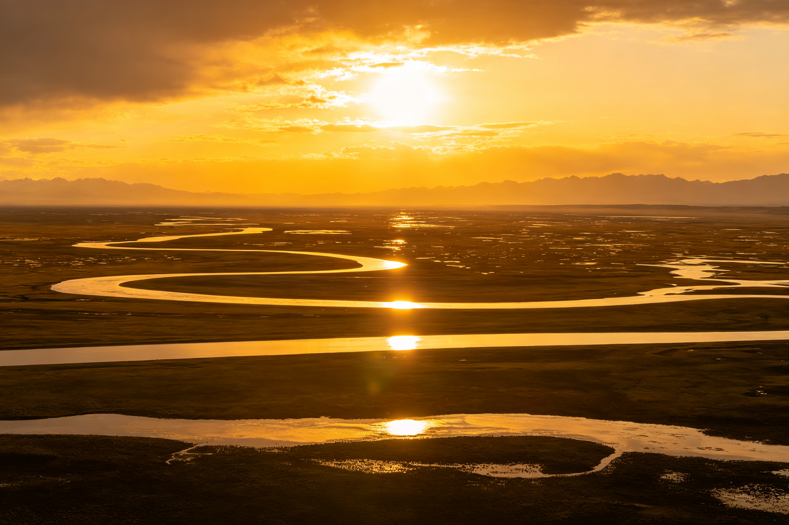
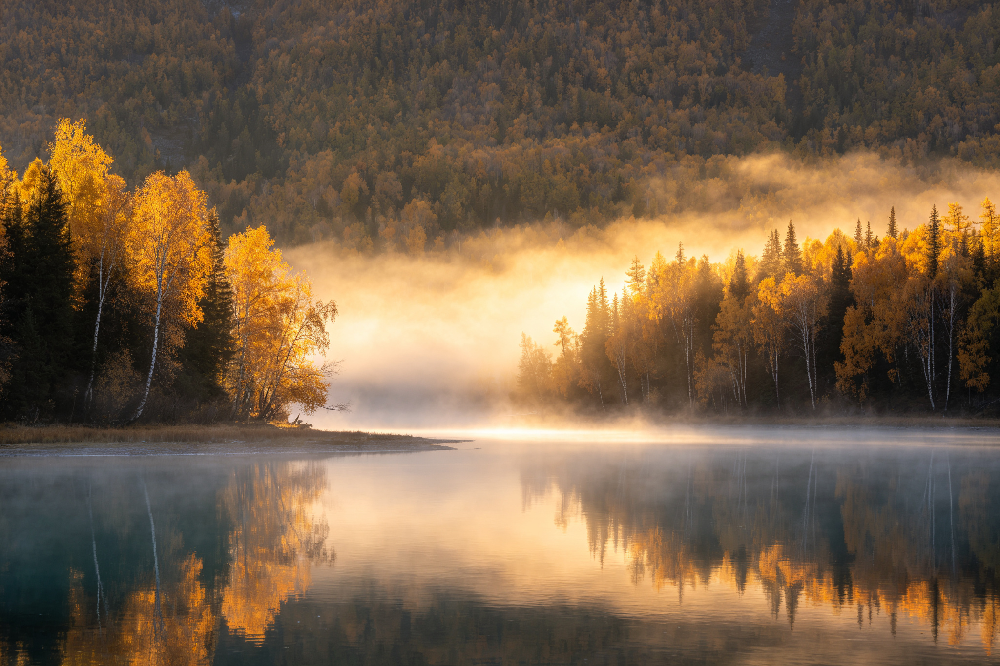

166 万平方公里，同一天里北部盆地能比南部低地凉 20℃。来新疆的时间和路线不对，等于白来——这份手册回答三件事：一般怎么个流程去、十二个月分别能看到什么、到底哪个季节最值得。
新疆的景点之间动辄四到八小时车程，每天都在换住处。它不适合“到了再说”的随性玩法，顺序想清楚，能省下大几千元和大量折返的路。
新疆是全国“四季差异最大”的目的地——同一个喀纳斯，6 月是翠绿湖泊、9 月底是鎏金白桦、1 月是齐膝深雪。先想清楚自己要看花海、金秋还是冰雪，再倒推出发月份。
看花海 → 6月看金秋 → 9月中下旬看杏花 → 4月上中旬看雪 → 1–2月天山以北的阿勒泰、伊犁是雪山、湖泊、草原、花海的自然长廊；天山以南的喀什、帕米尔是古城、巴扎、高原与胡杨的人文腹地。第一次去、偏爱自然风光，建议先走北疆。
自然风光 → 北疆人文历史 → 南疆时间充裕 → 南北疆连走单条经典环线建议 7–8 天（不含往返大交通）；北疆两条环线都走约 10–12 天；南北疆精华一次看遍需要 13–16 天。假期不足 7 天，宁可只深度玩一条线，也不要南北疆两头赶。
7–8天 · 一条环线10–12天 · 北疆全景13–16天 · 南北疆全景阿勒泰环线（喀纳斯、禾木、可可托海）、伊犁环线（赛里木湖、那拉提、巴音布鲁克、独库公路）、南疆环线（喀什、帕米尔高原、胡杨林）。下文第五章有每条线的逐日节点。
童话村落 → 阿勒泰草原花海 → 伊犁古城高原 → 南疆各地航班与高铁基本都在乌鲁木齐中转。当地游玩以包车 / 拼车 / 自驾为主，公共交通串联景区很吃力。7–8 月与国庆期间，喀纳斯、禾木的房源紧张，建议提前 1–2 个月预订；独库公路通常 6 月初通车、10 月初关闭，出行前务必确认路况。
中转枢纽 · 乌鲁木齐独库开放 · 约6月–10月初旺季提前1–2月订房昼夜温差普遍 10–15℃，按“短袖＋抓绒＋防风外套”分层打包；高原与湖区紫外线极强，SPF50 防晒、墨镜、唇膏必备。身份证全程必带，去南疆塔县等边境地区还需提前办理边防证。
分层穿衣SPF50 防晒边防证（塔县等）天山把新疆切成两个性格迥异的世界。绝大多数人第一次进疆走北疆——它兑现你对“新疆风光”的全部想象；南疆则属于第二次、或者想看真实西域生活的人。

雪山、冰川、湖泊、森林、草原、花海在一条环线里密集出现，车程即风景。夏季平均 20–25℃，是天然避暑地；秋季喀纳斯的金色白桦林被誉为“神的后花园”。

喀什古城里的土巷、巴扎和清真寺延续着丝路烟火；再往西是帕米尔高原，慕士塔格峰与喀拉库勒湖壮阔苍凉，秋季塔里木的胡杨林金黄一片。受季节影响相对小，8 月中旬之后天气转凉最舒服。
想一次看遍：常见走法是“先北疆后南疆”，在乌鲁木齐休整中转，全程约 13–16 天，比分别飞两趟省下一段机票钱。
春天追花、夏天避暑、秋天拍金、冬天玩雪——每一季的主角和区域都不同，下面按季节拆解看点、气温与避坑要点。




下图综合风景表现、天气舒适度、道路可达性与人流价格，对北疆、南疆逐月打分（编辑评估，满分 100）。可以直观看到：北疆的窗口集中在 5–10 月，南疆则在春秋两季更友好。
| 月份 | 北疆（阿勒泰 · 伊犁） | 南疆（喀什 · 帕米尔） | 推荐度 |
|---|---|---|---|
| 1月 | 大雪封山，禾木仅冰雪专线可达，约 −25～−10℃ | 喀什古城偶雪、游客极少，帕米尔视天气通行 | ★☆ 仅限冬旅 |
| 2月 | 同属深冬，春节期间部分民宿歇业 | 白天略回暖，古城安静 | ★☆ 不推荐 |
| 3月 | 冬季路况尾声，道路开放不稳定 | 和田一带杏花下旬初放 | ★★ 过渡观望 |
| 4月 | 伊犁河谷返青，赛湖下旬融冰，约 5–18℃ | 15–25℃ 舒适；吐尔根杏花上中旬 | ★★★★ 宝藏淡季 |
| 5月 | 喀纳斯道路重开、赛湖全开、草原返青，15–25℃ | 温暖不晒，各处顺畅 | ★★★★★ 最佳窗口 |
| 6月 | 赛湖电光蓝、薰衣草与野花地毯，20–28℃，独库通车 | 低地开始转热 | ★★★★★ 最佳窗口 |
| 7月 | 风景正盛，但暑假人潮与价格见顶，需早订房 | 吐鲁番 40–45℃，仅帕米尔高原可去 | ★★★ 暑期无奈 |
| 8月 | 山区白天 15–22℃ 依旧舒适，仍是旺季 | 低地酷热，建议只走高海拔 | ★★★ 只走山区 |
| 9月 | 白桦鎏金、10–22℃、人潮退去、几乎无沙尘 | 暖而不晒，全年最舒服 | ★★★★★ 全年第一 |
| 10月 | 上旬金秋叠加初雪；黄金周爆满涨价，下旬 0–12℃ | 塔里木胡杨林金黄，气温温和 | ★★★★ 避开黄金周 |
| 11月 | 喀纳斯道路通常上旬关闭，禾木转为滑雪目的地 | 古城安静，帕米尔初雪后或封闭 | ★★ 只走南疆 |
| 12月 | 全面深冬，只适合冰雪玩家 | 喀什淡季，低角度阳光很出片 | ★★ 冬境喀什 |
注：评分为编辑结合天气、景观、道路通行与旺季人流的综合判断；杏花、初雪、通车日期每年随气温浮动，出行前一周请再次确认景区与独库公路公告。
第一次去不用自己拼景点——新疆的旅行产品几乎都围绕下面三条成熟环线展开。点击切换，查看每条线的走向、天数与最佳档期。

北疆最经典的入门线，一路串联天山天池、可可托海、喀纳斯、禾木与魔鬼城，地貌从雪山湖泊到戈壁雅丹轮番切换，不走回头路。

新疆夏季风光的巅峰：赛里木湖的蓝、霍城的紫、喀拉峻与那拉提的绿，再以巴音布鲁克九曲十八弯的日落收尾，走一段独库公路堪称精华。
从喀什古城的丝路烟火一路上升到帕米尔高原，白沙湖、喀拉库勒湖与“冰山之父”慕士塔格峰壮阔苍凉；秋季可加看塔里木胡杨林。风景受季节影响小，人文体验才是主角。
问过反复进疆的旅行者与摄影师，答案高度一致。9 月把天气、景色、人流三件事同时解决了——这在新疆十二个月里独此一份。

喀纳斯与禾木的白桦、落叶松在这十几天里变成纯粹的金色，神仙湾晨雾、月亮湾弯月、观鱼台俯瞰全部到位；白天 10–22℃ 干爽通透，几乎零沙尘；暑假大军在 9 月中旬前退场，湖边栈道常常只剩你和风景。唯一的代价：8 月就得订好喀纳斯、禾木的房。
赶不上 9 月？6 月上中旬是第二选择——湖蓝、花海、独库初开，人还没涌进来；再退一步，5 月用淡季价格换嫩绿草原。
天气、景色、人流同时在线，七天集中看喀纳斯、禾木、可可托海，容错率最高。
赛里木湖最蓝、草原野花全盛，赶在暑假涨价和人潮之前，独库公路刚通车。
前者拍北疆白桦鎏金，后者拍南疆塔里木胡杨；务必避开国庆黄金周（10 月 1–7 日）。
景区淡季票价、住宿全年低位，4 月还能追杏花；代价是春风沙尘与部分路况不确定。
喀纳斯、巴音布鲁克白天仅 15–25℃，但要接受旺季人流与高房价，提前订房、放弃吐鲁番。
禾木雪村与赛里木湖蓝冰是冬季限定；杏花花期仅约一周且随气温变化，行程必须留弹性。
新疆官方使用北京时间，但地理位置上晚约 2 小时：夏季要到 22 点才天黑。当地普遍上午 10 点吃早饭、14 点午饭、21 点晚饭，看日落、赶景区班车都按“新疆时间”重新估算。
两个景点之间车程 4–8 小时是常态，环线旅行几乎每天换酒店。主流方式是包车、拼车或自驾，纯公共交通很难串联景区；独库公路等山区道路仅 6 月初至 10 月初前后通行。
身份证全程必备且检查频繁；去塔什库尔干、红其拉甫等边境地区需提前办理边防证（可在喀什办理，户籍地也可提前办）。无人机在很多景区受限，起飞前先查规定。
昼夜温差 10–15℃，按“短袖＋抓绒＋防风外套”分层打包；高原湖区紫外线极强，SPF50 防晒、墨镜、唇膏缺一不可。帕米尔塔县海拔约 3100 米，红其拉甫逾 4700 米，注意高反。
7–8 月与国庆是价格顶峰，喀纳斯、禾木住宿最贵且需提前 1–2 个月订；4–5 月、11 月为淡季，门票常有半价。跟团省心但自由度低，包车拼小团是多数人第一次的折中选择。
新疆面积相当于伊朗，没有“一次玩遍”这回事。7 天以内就专注一条环线；想看遍南北疆精华，老老实实留出 13–16 天，并在乌鲁木齐安排中转休整。